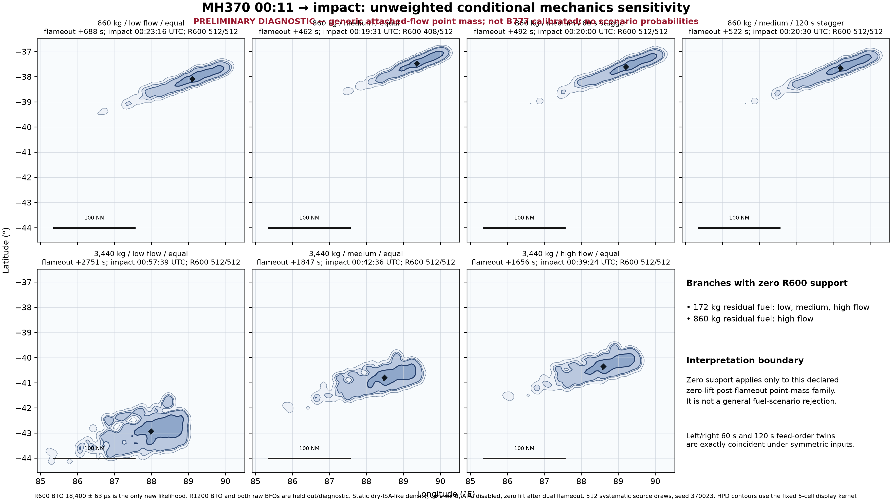

Diagnostic only - generic point mass, not B777 calibrated, and no scenario probabilities.

| Branch | R600 impacts | ESS | Dual flameout +s | Median impact UTC | Mean lat, lon | Mean NM from 00:11 |
|---|---|---|---|---|---|---|
| 172 kg / low / equal | zero R600 support | - | - | - | - | - |
| 172 kg / medium / equal | zero R600 support | - | - | - | - | - |
| 172 kg / high / equal | zero R600 support | - | - | - | - | - |
| 860 kg / low / equal | 512/512 | 466.3 | 687.6 | 00:23:16.557Z | -38.077, 89.103 | 101.5 |
| 860 kg / medium / equal | 408/512 | 305.0 | 461.8 | 00:19:31.395Z | -37.466, 89.366 | 70.8 |
| 860 kg / high / equal | zero R600 support | - | - | - | - | - |
| 3,440 kg / low / equal | 512/512 | 469.1 | 2750.5 | 00:57:39.482Z | -42.919, 87.989 | 396.7 |
| 3,440 kg / medium / equal | 512/512 | 469.0 | 1847.4 | 00:42:36.323Z | -40.794, 88.488 | 267.2 |
| 3,440 kg / high / equal | 512/512 | 469.0 | 1655.8 | 00:39:24.735Z | -40.344, 88.592 | 239.7 |
| 860 kg / medium / left first 60 s | 512/512 | 461.9 | 491.8 | 00:20:00.632Z | -37.606, 89.207 | 72.9 |
| 860 kg / medium / right first 60 s | 512/512 | 461.9 | 491.8 | 00:20:00.632Z | -37.606, 89.207 | 72.9 |
| 860 kg / medium / left first 120 s | 512/512 | 476.3 | 521.8 | 00:20:30.666Z | -37.658, 89.198 | 75.9 |
| 860 kg / medium / right first 120 s | 512/512 | 476.3 | 521.8 | 00:20:30.666Z | -37.658, 89.198 | 75.9 |